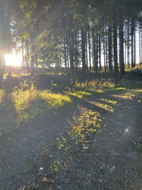

Der Wilzenberg liegt bei Schmallenberg im Sauerland und ist 658 Meter hoch. Er gehört zu den bekanntesten Bergen der Region und wird oft auch „der heilige Berg des Sauerlandes“ genannt.
Der Berg ist besonders wegen seiner Geschichte bekannt. Schon vor über 2000 Jahren nutzten Menschen den Wilzenberg als Schutz- und Zufluchtsort. Noch heute sind Reste alter Wallanlagen zu sehen. Außerdem wurden dort historische Waffen wie Schwerter und Speerspitzen gefunden.
Auf dem Wilzenberg befinden sich mehrere besondere Orte: die Marienkapelle, das große Hochkreuz und der bekannte Wilzenbergturm. Der Aussichtsturm wurde bereits im Jahr 1889 gebaut und bietet einen schönen Blick über das Schmallenberger Sauerland und das Rothaargebirge.
Heute ist der Wilzenberg ein beliebtes Ziel für Wanderer, Besucher und Pilger. Die Kombination aus Natur, Geschichte und Aussicht macht den Berg zu einem besonderen Ort im Sauerland.